1 Learning About a Binomial Probability
1.1 Introduction: Thinking About a Proportion Subjectively
In previous chapters, we have seen many examples involving drawing color balls from a box. In those examples, we are given the numbers of balls of various colors in the box, and we consider questions related to calculating probabilities. For example, there are 40 white and 20 red balls in a box. If you draw two balls at random, what is the probability that both balls are white?
Here we consider a new scenario where we do not know the proportions of color balls in the box. That is, in the previous example, we only know that there are two kinds of color balls in the box, but we don’t know 40 out of 60 of the balls are white (proportion of white = \(2/3\)) and 20 out of the 60 of the balls are red (proportion of red = \(1/3\)). How can we learn about the proportions of white and red balls? Since counting 60 balls can be tedious, how can we infer those proportions by drawing a sample of balls out of the box and observe the colors of balls in the sample? This becomes an inference question, because we are trying to infer the proportion \(p\) of the population, based on a sample from the population.
Let’s continue discussing the scenario where we are told that there are 60 balls in total in a box, and the balls are either white or red. We do not know the count of balls of each of the two colors. We are given the opportunity to take a random sample of 10 balls out of these 60 balls. We are interested in the quantity \(p\), the proportion of red balls in the 60 balls. How can we infer \(p\), the proportion of red balls in the population (i.e. the 60 balls), based on the numbers of red and white balls we observe in the sample (i.e. the 10 balls)?
Proportions are like probabilities. Recall in Chapter 1 three views of a probability were discussed. We briefly review them here, and state the specific requirements to obtain each view.
The classical view: one needs to write down the sample space where each outcome is equally likely.
The frequency view: one needs to repeat the random experiments many times under identical conditions.
The subjective view: one needs to express one’s opinion about the likelihood of a one-time event.
The classical view does not seem to work here, because we only know there are two kinds of color balls and the total number of balls is 60. Even if we take a sample of 10 balls, we are only going to observe the proportion of red balls in the sample. There does not seem to be a way for us to write down the sample space where each outcome is equally likely.
The frequency view would work here. One could treat the process of obtaining a sample (i.e. taking a random sample of 10 balls from the box) as an experiment, and obtain a sample proportion \(\hat{p}\) from the experiment. One then could repeat the experiment many times under the same condition, get many sample proportions \(\hat{p}\), and summarize all the \(\hat{p}\). When one repeats the experiment enough times (a large number), one gets a good sense about the proportion \(p\) of red balls in the population of 60 balls in the box. This process is doable, but tedious, time-consuming, and prone to errors.
The subjective view perceives the unknown proportion \(p\) subjectively. It does require one to express his or her opinion about the value of \(p\), and he or she could be skeptical and unconfident about the opinion. In Chapter 1, a calibration experiment was introduced to help one sharpen an opinion about the likelihood of an event by comparisons with opinion about the likelihood of other events. In this chapter and the chapters to follow, we introduce the key ideas and practice about thinking subjectively about unknowns and quantify one’s opinions about the values of these unknowns using probability distributions.
As an example, let’s think about plausible values for the proportion \(p\) of red balls. As \(p\) is a proportion, it can take any possible value between 0 and 1. In the calibration experiment introduced in Chapter 1, we focus on the scenario where only one value of \(p\) is of interest. For example, when one thinks that \(p\) is 0.5, it is saying that one’s opinion about the probability of the value \(p=0.5\) is one. When we phrase it this way (``one’s opinion about the probability of \(p=0.5\) is one”), it sounds like a very strong opinion, because one only allows \(p\) to take one possible value, and gives probability one of that happening. Since one typically has no thought about the exact value of the proportion \(p\), setting one possible value for the proportion with probability one seems too strong.
Instead suppose that the proportion \(p\) can take multiple values between 0 and 1. In particular, let’s consider two scenarios, in both \(p\) can take 10 different values, denoted by set \(A\).
\[\begin{eqnarray} A = \{0.1, 0.2, 0.3, 0.4, 0.5, 0.6, 0.7, 0.8, 0.9, 1.0\} \end{eqnarray}\]
Though \(p\) can take the same 10 multiple values in both scenarios, we assign different probabilities to each possible value.
- Scenario 1: \[\begin{eqnarray} f_1(A) = (0.1, 0.1, 0.1, 0.1, 0.1, 0.1, 0.1, 0.1, 0.1, 0.1) \end{eqnarray}\]
- Scenario 2: \[\begin{eqnarray} f_2(A) = (0.05, 0.05, 0.05, 0.175, 0.175, 0.175, 0.175, 0.05, 0.05, 0.05) \nonumber \\ \end{eqnarray}\]
To visually compare the values of two probability distributions \(f_1(A)\) and \(f_2(A)\), we plot \(f_1(A)\) and \(f_2(A)\) on the same graph.
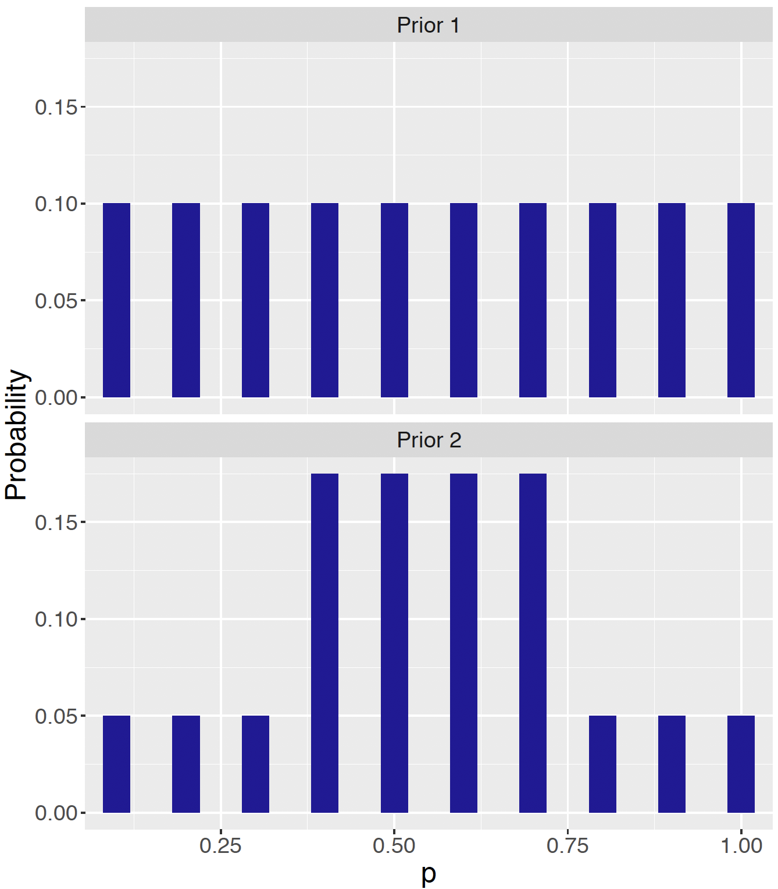
Figure 7.1 labels the \(x\)-axis as the values of \(p\) (range from 0 to 1), \(y\)-axis as the probabilities (range from 0 to 1). For both panels, there are ten bars, each representing the possible values of \(p\) in the set \(A = \{0.1, 0.2, 0.3, 0.4, 0.5, 0.6, 0.7, 0.8, 0.9, 1.0\}\).
The probability assignment in \(f_1(A)\) is called a discrete Uniform distribution, where each possible value of the proportion \(p\) is equally likely. Since there are ten possible values of \(p\), each value gets assigned a probability of \(1/10 = 0.1\). This assignment expresses the opinion that \(p\) can be any value from the set \(A = \{0.1, 0.2, 0.3, 0.4, 0.5, 0.6, 0.7, 0.8, 0.9, 1.0\}\), and each value has a probability of \(0.1\).
The probability assignment in \(f_2(A)\) is also discrete, however, we do not see a Uniform distribution pattern of the probabilities across the board. What we see is that the probabilities of the first three values (0.1, 0.2, and 0.3) and last three (0.8, 0.9, and 1.0) values of \(p\) are each \(1/3.5\) of that of the middle four (0.4, 0.5, 0.6, and 0.7) values. The shape of the bins reflects the opinion that the middle values of \(p\) are 3.5 times as likely as the extreme values of \(p\).
Both sets of probabilities follow the three probability axioms in Chapter 1. One sees that within each set,
Each probability is nonnegative;
The sum of the probabilities is 1;
The probability of mutually exclusive values is the sum of probability of each value, e.g. probability of \(p = 0.1\) or \(p = 0.2\) is \(0.1 + 0.1\) in \(f_1(A)\), and \(0.05 + 0.05\) in \(f_2(A)\).
In this introduction, we have presented a way to think about proportions subjectively. We have introduced a way to allow multiple values of \(p\), and perform probability assignments that follow the three probability axioms. One probability distribution expresses a unique opinion about the proportion \(p\).
To answer our inference question “what is the proportion of red balls in the box”, we will take a random sample of 10 balls, and use the observed proportion of red balls in that sample to sharpen and update our belief about \(p\). Bayesian inference is a formal method for implementing this way of thinking and problem solving, including three general steps.
Step 1: Prior: express an opinion about the location of the proportion \(p\) before sampling.
Step 2: Data/Likelihood: take the sample and record the observed proportion of red balls.
Step 3: Posterior:use Bayes’ rule to sharpen and update the previous opinion about \(p\) given the information from the sample.
As indicated in the parentheses, the first step “Prior” constructs prior opinion about the quantity of interest, and a probability distribution is used (like \(f_1(A)\) and \(f_2(A)\) earlier) to quantify the prior opinion. The name “prior” indicates that the opinion should be formed before collecting any data.
The second step “Data” is the process of data collection, where the quantity of interest is observed in the collected data. For example, if our 10-ball sample contains 4 red balls and 6 white balls, the observed proportion of red balls is \(4/10 = 0.4\). Informally, how does this information help us sharpen one’s opinion about \(p\)? Intuitively one would give more probability to \(p = 0.4\), but it is unclear how the probabilities would be redistributed among the 10 values in \(A\). Since the sum of all probabilities is 1, is it possible that some of the larger proportion values, such as \(p = 0.9\) and \(p = 1.0\), will receive probabilities of zero? To address these questions, the third step is needed.
The third step “Posterior” combines one’s prior opinion and the collected data to update one’s opinion about the quantity of interest. Just like the example of observing 4 red balls in the 10-ball sample, one needs a structured way of updating the opinion from prior to posterior.
Throughout this chapter, the entire inference process will be described for learning about a proportion \(p\). This chapter will discuss how to express prior opinion that matches with one’s belief, how to extract information from the data/likelihood, and how to update our opinion to its posterior.
1.2 Bayesian Inference with Discrete Priors
1.2.1 Example: students’ dining preference
Let’s start our Bayesian inference for proportion \(p\) with discrete prior distributions with a students’ dining preference example. A popular restaurant in a college town has been in business for about 5 years. Though the business is doing well, the restaurant owner wishes to learn more about his customers. Specifically, he is interested in learning about the dining preferences of the students. The owner plans to conduct a survey by asking students “what is your favorite day for eating out?” In particular, he wants to find out what percentage of students prefer to dine on Friday, so he can plan ahead for ordering supplies and giving promotions.
Let \(p\) denote the proportion of all students whose answer is Friday.
1.2.2 Discrete prior distributions for proportion \(p\)
Before giving out the survey, let’s pause and think about the possible values for the proportion \(p\). Not only does one want to know about possible values, but also the probabilities associated with the values. A probability distribution provides a measure of belief for the proportion and it ultimately will help the restaurant owner improve his business.
One might not know much about students’ dining preference, but it is possible to come up with a list of plausible values for the proportion. There are seven days a week. If each day was equally popular, then one would expect 1/7 or approximately 15% of all students to choose Friday. The owner recognizes that Friday is the start of the weekend, therefore there should be a higher chance of being students’ preferred day of dining out. So perhaps \(p\) starts with 0.3. Then what about the largest plausible value? Letting this largest value be 1 seems unrealistic, as there are six other days in the week. Suppose that one chooses 0.8 to be the largest plausible value, and then comes up with the list of values of \(p\) to be the six values going from 0.3 to 0.8 with an increment of 0.1.
\[\begin{eqnarray} p = \{0.3, 0.4, 0.5, 0.6, 0.7, 0.8\} \label{eq:dining:p} \end{eqnarray}\]
Next one needs to assign probabilities to the list of plausible values of \(p\). Since one may not know much about the location of the probabilities \(p\), a good place to start is a discrete Uniform prior (recall the discrete Uniform prior distribution for \(p\), the proportion of red balls, in Section 7.1). A discrete Uniform prior distribution expresses the opinion that all plausible values of \(p\) are equally likely. In the current students’ dining preference example, if one decides on six plausible values of \(p\) as in Equation (7.1), each of the six values gets a prior probability of 1/6. One labels this prior as \(\pi_l\), where \(l\) stands for laymen (for all of us who are not in the college town restaurant business). Note that in the notation \(f_l(p)\), the first \(p\) stands for probability, and the \(p\) in the parenthesis is our quantity of interest, the proportion \(p\) of students preferring to dine out on Friday.
\[\begin{eqnarray} \pi_l(p)= (1/6, 1/6, 1/6, 1/6, 1/6, 1/6) \label{eq:dining:laymenprior} \end{eqnarray}\]
With five years of experience of running his restaurant in this college town, the restaurant owner might have different opinions about likely values of \(p\). Suppose he agrees with us that \(p\) could take the 6 plausible values from 0.3 to 0.8, but he assigns a different prior distribution for \(p\). In particular, the restaurant owner thinks that values of 0.5 and 0.6 are most likely – each of these values is twice as likely as the other values. His prior is labelled as \(\pi_e\), where \(e\) stands for expert.
\[\begin{eqnarray} \pi_e(p)= (0.125, 0.125, 0.250, 0.250, 0.125, 0.125) \label{eq:dining:expertprior} \end{eqnarray}\]
To obtain \(\pi_e(p)\) efficiently, one can use the ProbBayes R package. First a data frame is created by providing the list of plausible values of \(p\) and corresponding weights assigned to each value using the function data.frame(). As one can see here, one does not have to calculate the probability – one only needs to give the weights (e.g. giving \(p = 0.3, 0.4, 0.7, 0.8\) weight 1 and giving \(p = 0.5, 0.6\) weight 2, to reflect the owner’s opinion ``0.5 and 0.6 are twice as likely as the other values”).
bayes_table <- data.frame(p = seq(.3, .8, by=.1),
Prior = c(1, 1, 2, 2, 1, 1))
bayes_table p Prior
1 0.3 1
2 0.4 1
3 0.5 2
4 0.6 2
5 0.7 1
6 0.8 1One uses the function mutate() to normalize these weights to obtain the prior probabilities in the Prior column.
bayes_table %>% mutate(Prior = Prior / sum(Prior)) -> bayes_table
bayes_table p Prior
1 0.3 0.125
2 0.4 0.125
3 0.5 0.250
4 0.6 0.250
5 0.7 0.125
6 0.8 0.125One conveniently plots the restaurant owner’s prior distribution by use of ggplot2 functions. This distribution is displayed in Figure 7.2.
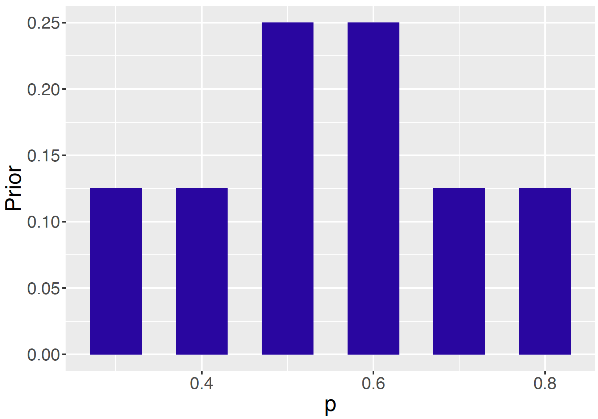
It is left as an exercise for the reader to compute and plot the laymen’s prior \(\pi_l(p)\) in Equation (7.2). For the rest of this section, we will work with the expert’s prior \(\pi_e(p)\).
1.2.3 Likelihood
The next step in the inference process is the data collection. The restaurant owner gives a survey to 20 student diners at the restaurant. Out of the 20 student respondents, 12 say that their favorite day for eating out is Friday. Recall the quantity of interest is proportion \(p\) of the population of students choosing Friday.
The likelihood is a function of the quantity of interest, which is the proportion \(p\). The owner has conducted an experiment 20 times, where each experiment involves a “yes” or “no” answer from the respondent to the rephrased question “whether Friday is your preferred day to dine out”. Then the proportion \(p\) is the probability a student answers ``yes”.
Does this ring a bell of what we have seen before? Indeed, in Chapter 4, one has seen this type of experiment, a Binomial experiment, similar to the dining survey. Recall that a Binomial experiment needs to satisfy four conditions:
- One is repeating the same basic task or trial many times – let the number of trials be denoted by \(n\).
- On each trial, there are two possible outcomes called
success" orfailure”. - The probability of a success, denoted by \(p\), is the same for each trial.
- The results of outcomes from different trials are independent.
If one recognizes an experiment as being Binomial, then all one needs to know is \(n\) and \(p\) to determine probabilities for the number of successes \(Y\). The probability of \(y\) successes in a Binomial experiment is given by
\[\begin{eqnarray} Prob(Y=y) = {n \choose y} p^y (1 - p)^{n - y}, y = 0, \cdots, n. \end{eqnarray}\]
Assuming the dining survey is a random sample (thus independent outcomes), this is the result of a Binomial experiment. The likelihood is the chance of 12 successes in 20 trials viewed as a function of the probability of success \(p\): \[\begin{eqnarray} Likelihood = L(p) = {20 \choose 12} p ^ {12} (1 - p) ^ 8. \label{eq:dining:likelihood} \end{eqnarray}\]
Generally one uses \(L\) to denote a likelihood function — one sees in Equation (7.5), \(L\) is a function of \(p\). Note that the value of \(n\), the total number of trials, is known and the number of successes \(Y\) is observed to be 12. The proportion \(p\), is the parameter of the Binomial experiment and the likelihood is a function of the proportion \(p\).
The likelihood function \(L(p)\) is efficiently computed using the dbinom() function in R. In order to use this function, we need to know the sample size \(n\) (20 in the dining survey), the number of successes \(y\) (12 in the dining survey), and \(p\) (the list of 6 plausible values created in Section 7.2.2; \(p = \{0.3, 0.4, 0.5, 0.6, 0.7, 0.8\}\)). Note that we only need the plausible values of \(p\), not yet the assigned probabilities in the prior distribution. The prior will be used in the third step to update the opinion of \(p\) to its posterior.
Below is the example R code of finding the probability of 12 successes in a sample of 20 for each value of the proportion \(p\). The values are placed in the Likelihood column of the bayes_table data frame.
bayes_table$Likelihood <- dbinom(12, size=20, prob=bayes_table$p)
bayes_table p Prior Likelihood
1 0.3 0.125 0.003859282
2 0.4 0.125 0.035497440
3 0.5 0.250 0.120134354
4 0.6 0.250 0.179705788
5 0.7 0.125 0.114396740
6 0.8 0.125 0.0221608771.2.4 Posterior distribution for proportion \(p\)
The posterior probabilities are found as an application of Bayes’ rule. This recipe will be illustrated first through a step-by-step calculation process. Next the process is demonstrated with the bayesian_crank() function in the ProbBayes R package, which implements the Bayes’ rule calculation and outputs the posterior probabilities.
Let \(\pi(p)\) to be the prior distribution of \(p\), let \(L(p)\) denote the likelihood function, and \(\pi(p \mid y)\) to be the posterior distribution of \(p\) after observing the number of successes \(y\). For discrete parameters, such as the proportion \(p\) in our case, one is able to enumerate the list of plausible values and assign prior probabilities to the values. If \(p_i\) represents a particular value of \(p\), Bayes’ rule for a discrete parameter has the form \[\begin{eqnarray} \pi(p_i \mid y) = \frac{\pi(p_i) \times L(p_i)} {\sum_j \pi(p_j) \times L(p_j)}, \label{eq:Discrete:bayesrule} \end{eqnarray}\] where \(\pi(p_i)\) is the prior probability of \(p = p_i\), \(L(p_i)\) is the likelihood function evaluated at \(p = p_i\), and \(\pi(p_i \mid y)\) is the posterior probability of \(p = p_i\) given the number of successes \(y\). By the Law of Total Probability, the denominator gives the marginal distribution of the observation \(y\).
Bayes’ rule can also be expressed as ``prior times likelihood”: \[\begin{eqnarray} \pi(p_i \mid y) \propto \pi(p_i) \times L(p_i) \label{eq:Discrete:bayesruleProp} \end{eqnarray}\] Equation (7.7) ignores the denominator and states that the posterior is proportional to the product of the prior and the likelihood. As one will see soon, the value of the denominator is a constant, meaning that its purpose is to normalize the numerator. It is convenient to work with Bayes’ rule as in Equation (7.7) in later chapters. However, it is instructive to show the exact calculation of Equation (7.6), because one has a finite sum in the denominator and it is possible to obtain the analytical solution. In the case where the prior is continuous, it will be more difficult to analytically compute the normalizing constant.
Returning to the students’ dining preference example, the list of plausible values of the proportion is \(p = \{0.3, 0.4, 0.5, 0.6, 0.7, 0.8\}\) and according to the restaurant owner’s expert prior, the assigned probabilities are \(\pi_e(p)= (0.125, 0.125, 0.250, 0.250, 0.125, 0.125)\) (recall Figure 7.2). After observing the number of successes, the likelihood values are calculated for the models using dbinom() function, as presented in Section 7.2.3.
The denominator is the sum of the products of the prior and the likelihood at each possible \(p_i\), which, given the Law of Total Probability, is equal to the marginal probability of the data \(f(y)\). One can think of the above formula as reweighing or normalizing the probability of \(\pi(p_i \mid y)\) by all possible values of \(p\). In the case of discrete models like this, the marginal probability of the likelihood is computed through \(\sum_j f(p_j) \times L(p_j)\).
In this setup, the computation of the posterior probabilities of different \(p_i\) values is straightforward. First, one calculates the denominator and denote the value as \(D\). \[\begin{eqnarray*}
D &=& \pi(0.3) \times L(0.3) + \pi(0.4) \times L(0.4) + \cdots + \pi(0.8) \times L(0.8) \\
&=& 0.125 \times {20 \choose 12}(0.3)^{12}(1-0.3)^{8} + \cdots + 0.125 \times {20 \choose 12}(0.8)^{12}(1-0.8)^{8} \nonumber \\ &\approx& 0.0969.
\end{eqnarray*}\] Then the posterior probability of \(p = 0.3\) is given by \[\begin{eqnarray*}
\pi(p = 0.3 \mid 12) &=& \frac{\pi(0.3) \times L(0.3)}{D} \\
&=& \frac{0.125 \times {20 \choose 12}(0.3)^{12}(1-0.3)^{8}}{D} \\
&\approx& 0.005.
\end{eqnarray*}\] In a similar fashion, the posterior probability of \(p=0.5\) is calculated as \[\begin{eqnarray*}
\pi(p = 0.5 \mid 12) &=& \frac{\pi(0.5) \times L(0.5)}{D} \\
&=& \frac{0.125 \times {20 \choose 12}(0.5)^{12}(1-0.5)^{8}}{D} \\
&\approx& 0.310.
\end{eqnarray*}\] One sees that the denominator is the same for the posterior probability calculation of every value of \(p\). This calculation gets tedious for a large number of possible values of \(p\). Relying on statistical software such as R helps us simplify the tasks.
To use the bayesian_crank() function, recall that we have already created a data frame with variables p, Prior, and Likelihood. Then the bayesian_crank() function is used to compute the posterior probabilities.
bayesian_crank(bayes_table) -> bayes_table
bayes_table p Prior Likelihood Product Posterior
1 0.3 0.125 0.003859282 0.0004824102 0.004975901
2 0.4 0.125 0.035497440 0.0044371799 0.045768032
3 0.5 0.250 0.120134354 0.0300335884 0.309786454
4 0.6 0.250 0.179705788 0.0449264469 0.463401326
5 0.7 0.125 0.114396740 0.0142995925 0.147495530
6 0.8 0.125 0.022160877 0.0027701096 0.028572757As one sees in the bayes_table output, the bayesian_crank() function computes the product of Prior and Likelihood and stores the values in the column Product, then normalizes each product with the sum of all products to produce the posterior probabilities, stored in the column Posterior.
Figure 7.3 compares the prior probabilities in the bottom panel with the posterior probabilities in the top panel. Notice the difference in the two distributions. After observing the survey results (i.e. the data/likelihood), the owner is more confident that \(p\) is equal to 0.5 or 0.6, and it is unlikely for \(p\) to be 0.3, 0.4, 0.7, and 0.8. Recall that the data gives an observed proportion 12/20 = 0.6. Since the posterior is a combination of prior and data/likelihood, it is not surprising that the data/likelihood helps the owner to sharpen his belief about proportion \(p\) and place a larger posterior probability around 0.6.
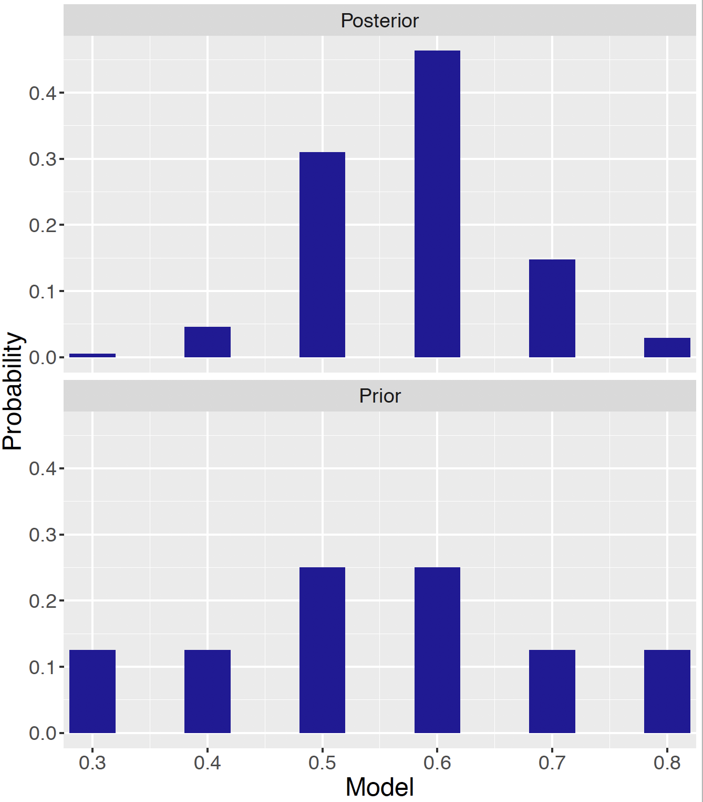
1.2.5 Inference: students’ dining preference
Let’s revisit the posterior distribution table to perform some inference. What is the posterior probability that over half of the students prefer eating out on Friday? One is interested in the probability that \(p >\) 0.5, in the posterior. Looking at the table, this posterior probability is equal to \[\begin{eqnarray*} Prob(p > 0.5) \approx 0.463 + 0.147 + 0.029 = 0.639. \end{eqnarray*}\] This means the owner is reasonably confident (with probability 0.639) that over half of the college students prefer to eat out on Friday.
One easily obtains the probability from the R output, for example.
sum(bayes_table$Posterior[bayes_table$p > 0.5])[1] 0.63946961.2.6 Discussion: using a discrete prior
Specifying a discrete prior has two steps: (1) specifying a list of plausible values of the parameter of interest, and (2) assigning probabilities to the plausible values. It is important to remember the three probability axioms when specifying a discrete prior.
After the prior specification, the next component is the data/likelihood, which can also be broken up into two steps. First, one constructs a suitable experiment that works for the particular scenario. Here one has a Binomial experiment for a survey to a fixed number of respondents, the answers are classified into yes" andno” or success" andfailure”, the outcome of interest is the number of successes and trials are independent. From the Binomial distribution, one obtains the likelihood function which is evaluated at each possible value of the parameter of interest. In our example, the dbinom() R function was used to calculate the likelihood function.
Last, the posterior probabilities are calculated using Bayes’ rule. In particular for the discrete case, follow Equation (7.6). The calculation of the denominator is tedious, however practice with the Bayes’ rule calculation enhances one’s understanding of Bayesian inference. R functions such as bayesian_crank() are helpful for implementing the Bayes’ rule calculations. Bayesian inference follows from a suitable summarization of the posterior probabilities. In our example, inference was illustrated by calculating the probability that over half of the students prefer eating out on Friday.
Let’s revisit the list of plausible values of proportion \(p\) of students preferring Friday in dining out in the example. Although \(p = 1.0\), that is, everyone prefers Friday, is very unlikely, one might not want to eliminate this proportion value from consideration. As one observes in the Bayes’ rule calculation process shown in Sections 7.2.3 and 7.2.4, if one does not include \(p = 1.0\) as one of the plausible values in the prior distribution in Section 7.2.2, this value will also be given a probability of zero in the posterior.
Alternatively, one could choose the alternative set of values \[\begin{eqnarray*} p = \{0.1, 0.2, 0.3, 0.4, 0.5, 0.6, 0.7, 0.8, 0.9, 1.0\}, \end{eqnarray*}\] and assign a very small prior probability (e.g. 0.05 or even smaller) for \(p = 1.0\) to express the opinion that \(p = 1.0\) is very unlikely. One may assign small prior probabilities for other large values of \(p\) such as \(p = 0.9\).
This comment illustrates a limitation of specifying a discrete prior for a proportion \(p\). If a plausible value is not specified in the prior distribution (e.g. \(p = 1.0\) is not in the restaurant owner’s prior distribution), it will be assigned a probability of zero in the posterior (e.g. \(p = 1.0\) is not in the restaurant owner’s posterior distribution).
It generally is more desirable to have \(p\) to be any value in [0, 1] including less plausible values such as \(p = 1.0\). To make this happen, the proportion \(p\) should be allowed to take any value between 0 and 1, which means \(p\) will be a continuous variable. In this situation, it is necessary to construct a continuous prior distribution for \(p\). A popular class of continuous prior distributions for proportion is the Beta distribution which is the subject of the next section.
1.3 Continuous Priors
Let’s continue our students’ dining preference example. A restaurant owner is interested in learning about the proportion \(p\) of students whose favorite day for eating out is Friday.
The proportion \(p\) should be a value between 0 and 1. Previously, we used a discrete prior for \(p\), representing the belief that \(p\) only takes the six different values 0.3, 0.4, 0.5, 0.6, 0.7, and 0.8. An obvious limitation of this assumption is, what if the true \(p\) is 0.55? If the value 0.55 is not specified in the prior distribution of \(p\) (that is, a zero probability is assigned to the value \(p\) = 0.55), then by the Bayes’ rule calculation (either by hand or by the useful bayesian_crank() function) there will be zero posterior probability assigned to 0.55. It is therefore preferable to specify a prior that allows \(p\) to be any value in the interval [0, 1].
To represent such a prior belief, it is assumed that \(p\) is continuous on [0, 1]. Suppose again that one is a layman unfamiliar with the pattern of dining during a week. Then one possible choice of a continuous prior for \(p\) is the continuous Uniform distribution, which expresses the opinion that \(p\) is equally likely to take any value between 0 and 1.
Formally, the probability density function of the continuous Uniform on the interval \((a, b)\) is \[\begin{eqnarray} \pi(p) = \begin{cases} \frac{1}{b - a} & \text{for }a \le p \le b,\\ 0 & \text{for }p < a \,\, \text{or } p > b. \end{cases} \label{eq:Binomial:Continuous:Uniform} \end{eqnarray}\] In our situation \(p\) is a continuous Uniform random variable on [0, 1], we have \(\pi(p) = 1\) for \(p \in [0, 1]\), and \(\pi(p) = 0\) everywhere else.
What about other possible continuous prior distributions for \(p\) on [0, 1]? Consider a prior distribution for the restaurant owner who has some information about the location (i.e. value) of \(p\). This owner would be interested in a continuous version of the discrete prior distribution where values of \(p\) between 0.3 and 0.8 are more likely than the values at the two ends.
The Beta family of continuous distributions is useful for representing prior knowledge in this situation. A Beta distribution, denoted by Beta(\(a, b)\), represents probabilities for a random variable falling between 0 and 1. This distribution has two shape parameters, \(a\) and \(b\), with probability density function given by \[\begin{eqnarray} \pi(p) = \frac{1}{B(a, b)} p^{a - 1} (1 - p)^{b - 1}, \, \, 0 \le p \le 1, \end{eqnarray}\] where \(B(a, b)\) is the Beta function defined by \(B(a, b) = \frac{\Gamma(a)\Gamma(b)}{\Gamma(a+b)}\), where \(\Gamma\) is the Gamma function. For future reference, it is useful to know that if \(p \sim {\rm Beta}(a, b)\), its mean \(E[p] = \frac{a}{a+b}\) and its variance \(V(p) = \frac{ab}{(a+b)^2(a+b+1)}\). The continuous Uniform in Equation (7.8) is a special case of the Beta distribution: \(\textrm{Uniform}(0, 1) = \textrm{Beta}(1, 1)\).
For the remainder of this section, Section 7.3.1 introduces the Beta distribution and Beta probabilities, and Section 7.3.2 focuses on several ways of choosing a Beta prior that reflects one’s opinion about the location of a proportion.
1.3.1 The Beta distribution and probabilities
The two shape parameters \(a\) and \(b\) control the shape of the Beta density curve. Figure 7.4 shows density curves of Beta distributions for several choices of the shape parameters. One observes from this figure that the Beta density curve displays vastly different shapes for varying choices of \(a\) and \(b\). For example, \(\textrm{Beta}(0.5, 0.5)\) represents the prior belief that extreme values of \(p\) are likely and \(p=0.5\) is the least probable value. In the students’ dining preference example, specifying a \(\textrm{Beta}(0.5, 0.5)\) would reflect the owner’s belief that the proportion of students dining out on Friday is either very high (near one) or very low (near one) and not likely to be moderate values.
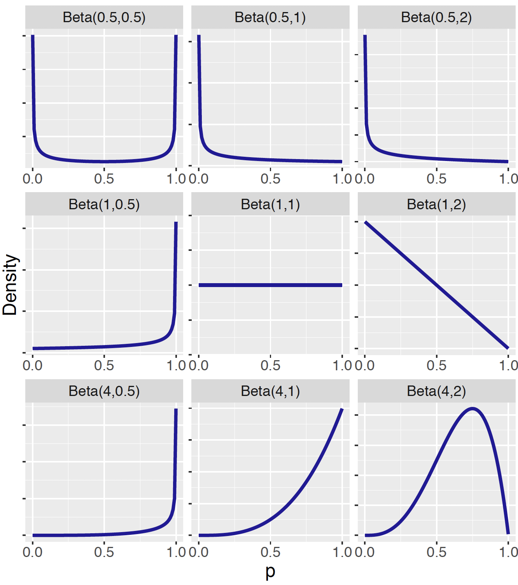
As the Beta is a common continuous distribution, R functions are available for Beta distribution calculations. We provide a small example of “Beta” functions for Beta(1, 1), where the two shape parameters 1 and 1 are the second and third arguments of the functions.
Recall the following useful results from previous material: (1) a \(\textrm{Beta}(1, 1)\) distribution is a Uniform density on (0, 1), (2) the density of \(\textrm{Uniform}(0, 1)\) is \(\pi(p) = 1\) on [0, 1], and (3) if \(p \sim \textrm{Uniform}(0, 1)\), then the cdf \(F(x) = Prob(p \leq x) = x\) for \(x \in [0, 1]\).
dbeta(): the probability density function for a \(\textrm{Beta}(a, b)\) which takes a value of the random variable as its input and outputs the probability density function at that value.
For example, we evaluate the density function of \(\textrm{Beta}(1, 1)\) at the values \(p = 0.5\) and \(p = 0.8\), which should be both 1, and 0 at \(p = 1.2\) which should be 0 since this value is outside of [0, 1].
dbeta(c(0.5, 0.8, 1.2), 1, 1)[1] 1 1 0pbeta(): the distribution function of a Beta(a; b) random variable, which takes a value x and gives the value of the random variable at that value, F(x).
For example, suppose one wishes to evaluate the distribution function of \(\textrm{Beta}(1, 1)\) at \(p = 0.5\) and \(p = 0.8\).
pbeta(c(0.5, 0.8), 1, 1)[1] 0.5 0.8One calculates the probability of \(p\) between 0.5 and 0.8, i.e. \(Prob(0.5 \le p \le 0.8)\) by taking the difference of the cdf at the two values.
pbeta(0.8, 1, 1) - pbeta(0.5, 1, 1)[1] 0.3qbeta(): the quantile function of a \(\textrm{Beta}(a, b)\), which inputs a probability value \(p\) and outputs the value of \(x\) such that \(F(x) = p\).
For example, suppose one wishes to calculate the quantile of \(\textrm{Beta}(1, 1)\) at \(p = 0.5\) and \(p = 0.8\).
qbeta(c(0.5, 0.8), 1, 1)[1] 0.5 0.8rbeta(): the random number generator for \(\textrm{Beta}(a, b)\), which inputs the size of a random sample and gives a vector of the simulated random variates.
For example, suppose one is interested in simulating a sample of size five from \(\textrm{Beta}(1, 1)\).
rbeta(5, 1, 1)[1] 0.014428665 0.706480894 0.007722286 0.014802991 0.620159572There are additional functions in the ProbBayes R package that aid in visualizing Beta distribution calculations. For example, suppose one has a \(\textrm{Beta}(7, 10)\) curve and we want to find the chance that \(p\) is between 0.4 and 0.8. Looking at Figure 7.5, this probability corresponds to the area of the shaded region. The special function beta_area() will compute and illustrate this probability. Note the use of the vector c(7, 10) to input the two shape parameters.
beta_area(0.4, 0.8, c(7, 10))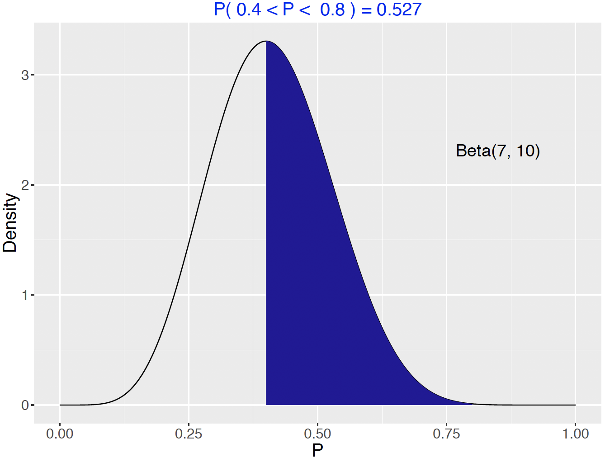
One could also find the chance that \(p\) is between 0.4 and 0.8 by subtracting two pbeta() functions.
pbeta(0.8, 7, 10) - pbeta(0.4, 7, 10)[1] 0.5269265The function beta_quantile() works in the same way as qbeta(), the quantile function. However, beta_quantile() automatically produces a plot with the shaded probability area. Figure 7.6 plots and computes the quantile to be 0.408. The chance that \(p\) is smaller than 0.408 is 0.5.
beta_quantile(0.5, c(7, 10))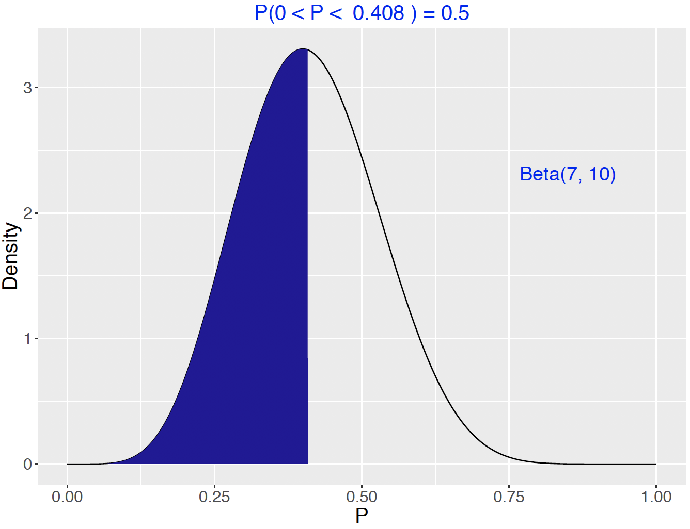
Alternatively, use the qbeta() function without returning a plot.
qbeta(0.5, 7, 10)[1] 0.40822651.3.2 Choosing a Beta density to represent prior opinion
One wants to use a \(\textrm{Beta}(a, b)\) density curve to represent one’s prior opinion about the values of the proportion \(p\) and their associated probabilities. It is difficult to guess at values of the shape parameters \(a\) and \(b\) directly. However, there are indirect ways of guessing their values. We present two general methods here.
The first method is to consider the shape parameter \(a\) as the prior count of “successes” and the other shape parameter \(b\) as the prior count of “failures”. Subsequently, the value \(a + b\) represents the prior sample size comparable to \(n\), the data sample size. Following this setup, one could specify a Beta prior with shape parameter \(a\) expressing the number of successes in one’s prior opinion, and the other shape parameter \(b\) expressing the number of failures in one’s prior opinion. For example, if one believes that a priori there should be about 4 successes and 4 failures, then one could use \(\textrm{Beta}(4, 4)\) as the prior distribution for the proportion \(p\).
How can we check if \(\textrm{Beta}(4, 4)\) looks like what we believe a priori? Recall that rbeta() generates a random sample from a Beta distribution. The R script below generates a random sample of size 1000 from \(\textrm{Beta}(4, 4)\) and we plot a histogram and an overlapping density curve. (See top panel of Figure 7.7.) By an inspection of this graph, one decides if this prior is a reasonable approximation to one’s beliefs about the proportion.
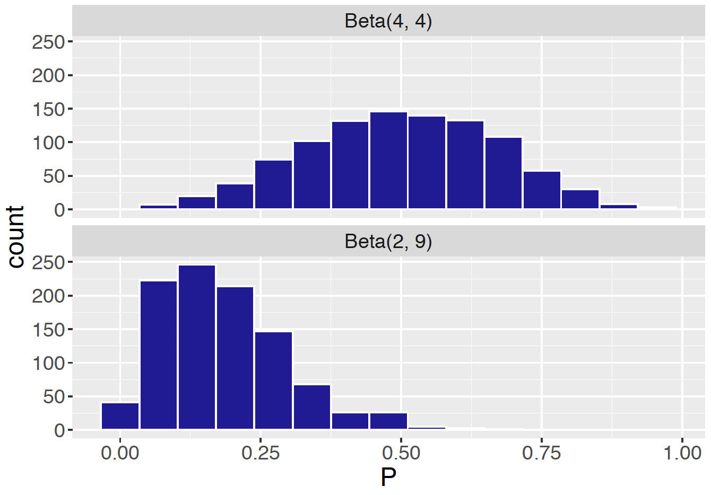
As a second example, consider a belief that a priori there are 2 successes and 9 failures, corresponding to the \(\textrm{Beta}(2, 9)\) prior? One can use the rbeta() function take a random sample of 1000 from this prior.
Beta29samples <- rbeta(1000, 2, 9)Comparing the two distributions, note from Figure 7.7 that \(\textrm{Beta}(2, 9)\) favors smaller proportion values than \(\textrm{Beta}(4, 4)\).
To further check the quantiles of the prior, one can use the quantile() function on the simulated draws from the prior. For example, if one wishes to check the middle 50% range of values of \(p\) from the random sample of values from \(\textrm{Beta}(4, 4)\), one types
Beta44samples <- rbeta(1000, 4, 4)
quantile(Beta44samples, c(0.25, 0.75)) 25% 75%
0.3866210 0.6249832 This tells us that the probability that \(p \leq 0.366\) is 0.25 and the probability that \(p \geq 0.616\) is also 0.25. These probability statements should be checked against one’s prior belief about \(p\). If these quantiles do not seem reasonable, one should make adjustments to the values of the shape parameters \(a\) and \(b\) .
On the surface the two priors \(\textrm{Beta}(4, 4)\) and \(\textrm{Beta}(40, 40)\) seem similar in that they both have a mean of \(0.5\) and represent similar breakdowns of the success and failure counts. However, the aforementioned concept of prior sample size tells us that \(\textrm{Beta}(4, 4)\) has a prior sample size of 8 while that of \(\textrm{Beta}(40, 40)\) is 80. As we will see in Section 7.4, the prior sample size determines the strength of the prior (i.e. the confidence level in the prior) and so the \(\textrm{Beta}(40, 40)\) prior represents a much stronger belief that \(p\) is close to the value 0.5.
A second indirect method of determining a Beta prior is by specification of quantiles of the distribution. Specifically, one determines the shape parameters \(a\) and \(b\) by first specifying two quantiles of the Beta density curve, and then finding the Beta density curve that matches these quantiles. Suppose the restaurant owner uses his knowledge to specify the 0.5 and 0.9 quantiles of the proportion \(p\) as follows.
First, the restaurant owner thinks of a value \(p_{50}\) such that the proportion \(p\) is equally likely to be smaller or larger than \(p_{50}\). After some thought, he thinks that \(p_{50}\) = 0.55.
Next, the owner thinks of a value \(p_{90}\) that he is pretty sure (with probability 0.90) that the proportion \(p\) is smaller than \(p_{90}\). After more thought, he decides \(p_{90}\) = 0.80.
One then uses the beta.select() function in the ProbBayes package to find shape parameters \(a\) and \(b\) of the Beta density curve that match this information. Each quantile is specified by a list with values \(x\) and \(p\). From the output, we see \(\textrm{Beta}(3.06, 2.56)\) curve represents the owner’s prior beliefs.
beta.select(list(x = 0.55, p = 0.5),
list(x = 0.80, p = 0.9))[1] 3.06 2.56The owner’s Beta density curve is shown here. To make sure this prior is reasonable, the owner should compute several probabilities and quantiles for his prior distribution and see if these values correspond to his opinion.
To illustrate this checking process, Figure 7.8 shows the middle 50% area of the prior distribution. This graph shows that the probability that \(p \leq 0.402\) is 0.25 and the probability that \(p \geq 0.692\) is also 0.25. If these calculations do not correspond to the owner’s opinion, then maybe some change in the prior distribution would be appropriate.
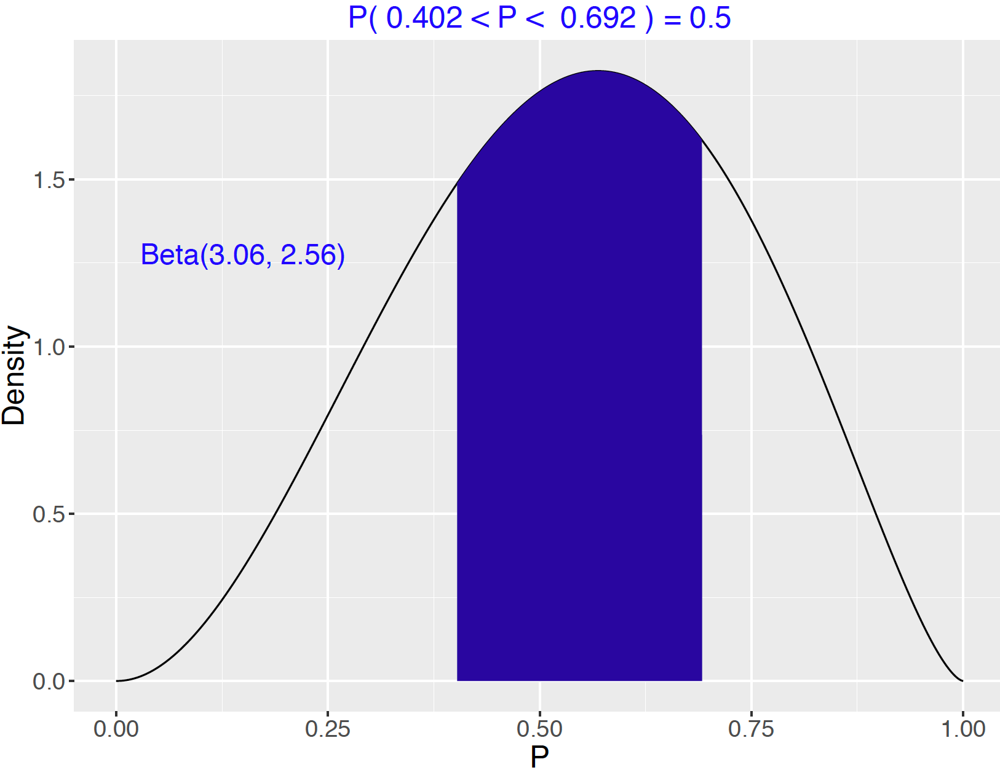
1.4 Updating the Beta Prior
In the previous section, we have seen that the restaurant owner thinks that a Beta curve with shape parameters 3.06 and 2.56 is a reasonable reflection of his prior opinion about the proportion of students \(p\) whose favorite day for eating out is Friday. Therefore, we work with \(\textrm{Beta}(3.06, 2.56)\) as the prior distribution for \(p\).
Now we have the survey results – the survey was administered to 20 students and 12 say that their favorite day for eating out is Friday. As before in Section 7.2, the likelihood, that is the chance of getting this data if the probability of success is \(p\) is given by the Binomial formula, \[\begin{eqnarray*} Likelihood = L(p) = {20 \choose 12} p ^ {12 }(1 - p) ^ 8. \end{eqnarray*}\]
In this section, the Bayes’ rule calculation of the posterior is presented for the continuous prior case and one discovers an interesting result: if one starts with a Beta prior for a proportion \(p\), and the data is Binomial, then the posterior will also be a Beta distribution. The Beta posterior is a natural combination of the information contained in the Beta prior and the Binomial sampling, as one would expect in typical Bayesian inference. This is an illustration of the use of a conjugate prior where the prior and posterior densities are in the same family of distributions.
1.4.1 Bayes’ rule calculation
First we demonstrate the Bayes’ rule calculation of the posterior of \(p\) through the proportional statement: \[\begin{eqnarray} \pi(p \mid y) \propto \pi(p) \times L(p). \end{eqnarray}\]
The prior distribution of \(p\), with density \(\pi(p)\), is Beta with shape parameters \(3.06\) and \(2.56\) \[\begin{eqnarray*} p \sim \textrm{Beta}(3.06, 2.56). \end{eqnarray*}\] The symbol “\(\sim\)” is read “follows”, meaning that the random variable before the symbol follows the distribution after the symbol.
For the data/likelihood, we introduce proper notation. Let \(Y\) be the random variable of the number of students say that their favorite day for eating out is Friday. We know that the sampling distribution for \(Y\) is a Binomial distribution with number of trials \(20\) and success probability \(p\). Using the notation of ``\(\sim\)“, we have \[\begin{eqnarray*} Y \sim \textrm{Binomial}(20, p). \end{eqnarray*}\] After the value \(Y = y\) is observed, \(L(p) = f(y \mid p)\) denotes the likelihood, which is the probability of observing this sample value \(y\) viewed as a function of the proportion \(p\). (Note that a small letter \(y\) is used to denote the actual data observed, as opposed to the random variable \(Y\).) From the dining survey, we know that \(y = 12\).
Now we have the following prior density and the likelihood function.
The prior distribution: \[\begin{eqnarray*} \pi(p) = \frac{1}{B(3.06, 2.56)}p^{3.06-1}(1-p)^{2.56-1}. \end{eqnarray*}\]
The likelihood: \[\begin{eqnarray*} f(Y =12 \mid p) = L(p) = {20 \choose 12}p^{12}(1-p)^{8}. \end{eqnarray*}\]
By Bayes’ rule, the posterior density \(\pi(p \mid y)\) is proportional to the product of the prior and the likelihood.
\[\begin{eqnarray*}
\pi(p \mid y) \propto \pi(p) \times L(p).
\end{eqnarray*}\]
Substituting the current prior and likelihood, one can perform the algebra for the posterior density. \[\begin{eqnarray} \pi(p \mid Y = 12) &\propto& \pi(p) \times f(Y = 12 \mid p) \nonumber \\ &=& \frac{1}{B(3.06, 2.56)}p^{3.06-1}(1-p)^{2.56-1} \times \nonumber \\ && {20 \choose 12}p^{12}(1-p)^{8} \nonumber \\ \texttt{[drop the constants]} &\propto& p^{12}(1-p)^{8}p^{3.06-1}(1-p)^{2.56-1} \nonumber \\ \texttt{[combine the powers]} &=& p^{15.06-1}(1-p)^{10.56-1}. \nonumber \\ \end{eqnarray}\] One observes that the posterior density of \(p\) given \(Y = 12\) is, up to a proportionality constant, \[\begin{eqnarray*} \pi(p \mid Y = 12) \propto p^{15.06-1}(1-p)^{10.56-1}. \end{eqnarray*}\]
Note that in the posterior derivation, the constants \({20 \choose 12}\) and \(\frac{1}{B(3.06, 2.56)}\) are dropped due to the proportional sign “\(\propto\)”. That is, the expression of \(\pi(p \mid Y = 12)\) is computed up to some constant. In this case, Appendix A demonstrates the calculation of the constant.
Next, one recognizes if the posterior distribution of \(p\) is recognizable as a member of a familiar family of distributions. In the computation of the posterior, we have intentionally kept the expression of ``\(-1\)” in the powers of \(p\) and \(1-p\) terms, instead of using \(14.06\) and \(9.56\) directly. By doing this, one recognizes that the posterior density has the familiar form \[\begin{eqnarray*} p^{a-1}(1-p)^{b-1}. \end{eqnarray*}\] As the reader might have guessed, the posterior distribution turns out to be a Beta distribution with updated shape parameters. That is, the posterior distribution of \(p\) given \(Y = 12\) is Beta with parameters 15.06 and 10.56.
1.4.2 From Beta prior to Beta posterior
The results about a proportion \(p\) from the Bayes’ rule calculation performed in Section 7.4.1 can be generalized. Suppose one works with the following prior distribution and sampling density:
The prior distribution: \[\begin{eqnarray*} p \sim \textrm{Beta}(a, b) \end{eqnarray*}\]
The sampling density: \[\begin{eqnarray*} Y \sim \textrm{Binomial}(n, p) \end{eqnarray*}\]
One observes the count \(Y = y\), the number of successes in the collected data. Then the posterior distribution of \(p\) is another Beta distribution with shape parameters \(a + y\) and \(b + n - y\).
- The posterior distribution: \[\begin{eqnarray} p \mid Y = y \sim \textrm{Beta}(a + y, b + n - y) (\#eq:betaposterior2) \end{eqnarray}\]
The two shape parameters of the Beta posterior distribution, \(a + y\) and \(b + n - y\), are the sums of the prior and data/likelihood counts of successes and failures, respectively. We algebraically combine the shape parameters of the Beta prior and the Binomial likelihood to obtain the shape parameters of the posterior Beta distribution.
Table 7.1 demonstrates this process with three rows labelled Prior, Data/Likelihood and Posterior. The Prior row contains the shape parameters of the Beta prior \(a\) and \(b\) in the Successes and Failures columns, respectively. The Data/Likelihood row contains the number of successes \(y\) and the number of failures \(n - y\). The shape parameters of the Beta posterior are found by adding the prior parameter values and the data values.
Table 7.1. Updating the Beta prior.
| Source | Successes | Failures |
|---|---|---|
| Prior | (a) | (b) |
| Data/Likelihood | (y) | (n-y) |
| Posterior | (a + y) | (b + n - y) |
In the following R script we update the Beta shape parameters. We see that the owner’s posterior distribution for \(p\) is Beta with shape parameters 15.06 and 10.56.
ab <- c(3.06, 2.56)
yny <- c(12, 8)
(ab_new <- ab + yny)[1] 15.06 10.56The function beta_prior_post() in the ProbBayes R package plots the prior and posterior Beta curves together on one graph, see Figure 7.9.
beta_prior_post(ab, ab_new)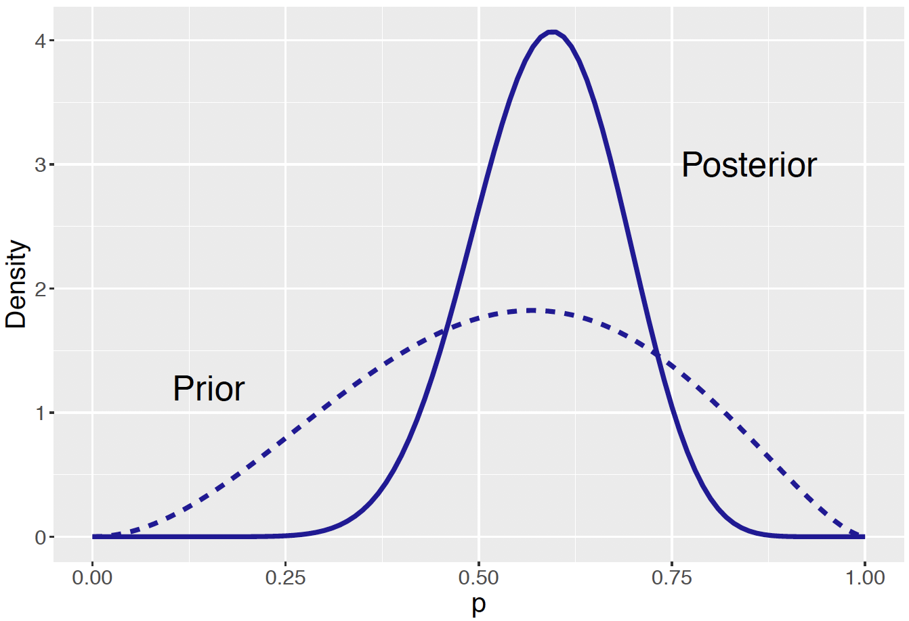
Comparing the two Beta curves, several observations can be made.
One can compare the prior and posterior Beta curves using the respective means. The mean of a \(\textrm{Beta}(a, b)\) distribution is \(\frac{a}{a+b}\). Using this formula, the posterior mean of \(p\) is 15.06 / (15.06 + 10.56) = 0.588 which is slightly larger than the prior mean 3.06 / (30.6 + 2.56) = 0.544. Recall that the sample proportion from the survey results is \(12/20 = 0.6\). The posterior mean lies between the prior mean and sample mean and it is closer to the sample mean.
Next one compares the spreads of the two curves. One sees a much wider spread of the prior Beta curve (dashed line) than that of the posterior Beta curve (solid line). Initially the owner was unsure about the proportion of students favoring Friday to dine out. After observing the results of the survey, the solid posterior curve indicates that he is more certain that \(p\) is between 0.5 and 0.7. This sheds light on a general feature of Bayesian inference: the data helps sharpen the belief about the parameter of interest, producing a posterior distribution with a smaller spread than the prior distribution.
The attractive combination of a Beta prior and a Binomial sampling density to obtain a posterior motivates a definition of conjugate priors. If the prior distribution and the posterior distribution come from the same family of distributions, the prior is then called a conjugate prior. Here a Beta is a conjugate prior for a success probability \(p\), since the posterior distribution for \(p\) is also in the Beta family. Conjugate priors are specific to the choice of sampling density. For example, a Beta prior is conjugate with Binomial sampling, but not to Normal sampling which is popular for continuous outcome. In Chapter 8 we will discover the conjugate prior distribution for a Normal sampling distribution.
Conjugate priors are desirable because they simplify the Bayesian inference procedure. In the dining preference example, when a \({\rm Beta}(3.06, 2.56)\) prior is assigned to \(p\), the posterior is \({\rm Beta}(15.06, 10.56)\) and inference about \(p\) is made in a straightforward way. One can easily plot the he prior and posterior Beta distributions as in Figure 7.9. One can also make precise comparative statements about the locations of the prior and posterior distribution using quantiles of a Beta curve.
Although conjugate priors are convenient and straightforward to use, they may not be appropriate for use in a Bayesian analysis. One should choose a prior that fits one’s belief, not one that is convenient to use. In some situations it may be appropriate to choose a prior distribution that does not provide conjugacy. In Chapter 9, we will describe computational methods to facilitate posterior inferences when non-conjugate priors are used. Modern Bayesian posterior computations accommodate a wide variety of choices of prior and sampling distributions. Therefore it is more important to choose a prior that matches one’s prior belief than choosing a prior that is computationally convenient.
1.5 Bayesian Inferences with Continuous Priors
We will continue with the dining preference example to illustrate different types of Bayesian inference. The restaurant owner has taken his dining survey and the posterior distribution \(\textrm{Beta}(15.06, 10.56)\) reflects his opinion about the proportion \(p\) of students whose favorite day for eating out is Friday.
All Bayesian inferences about the proportion \(p\) are based on various summaries of this posterior Beta distribution. The summary we compute from the posterior will depend on the type of inference. We will focus on three types of inference: (1) testing problems where one is interested in assessing the likelihood of some values of \(p\), (2) interval estimations where one wants to find an interval that is likely to contain \(p\), and (3) Bayesian prediction where one wants to learn about new observation(s) in the future.
Simulation will be incorporated for all three types of Bayesian inference problems. Since one has a conjugate prior distribution, one can derive the exact posterior distribution (a Beta) and inferences are performed with the exact posterior Beta distribution. In other situations when conjugacy is not available, meaning that no exact representation of the posterior is available, inferences through simulation are much more widely used. It is instructive to present the exact solutions and the approximated simulation-based solutions together, so one learns through practice and prepare for future use of simulation in other settings.
There is nothing magic about simulation. In fact, simulation has been used earlier, when the rbeta() function was used to generate simulated samples from \(\textrm{Beta}(4, 4)\) and \(\textrm{Beta}(2, 9)\) and check the appropriateness of the chosen Beta prior (review Section 7.3.2} as needed). Information on simulation and the relevant R code will be introduced in the description of each inferential problem.
1.5.1 Bayesian hypothesis testing
Suppose one of the restaurant workers claims that at least 75% of the students prefer to eat out on Friday. Is this a reasonable claim?
In traditional classical statistics, one might be interested in testing the hypothesis \(H: p \ge 0.75\).
From a Bayesian viewpoint, it is straightforward to implement this test. Since the hypothesis is an interval of values, one finds the posterior probability that \(p \ge 0.75\) and makes a decision based on the value of this probability. If the probability is small, one rejects this claim.
First the exact solution will be presented. Since the posterior distribution is \(\textrm{Beta}(15.06, 10.56)\), the owner’s posterior density is graphed and the area under the curve for values of \(p\) between 0.75 and 1 is found. The beta_area() function is used to display and show the area; see Figure 7.10. Since the probability is only about 4%, one rejects the worker’s claim that \(p\) is at least 0.75.
beta_area(lo = 0.75, hi = 1.0,
shape_par = c(15.06, 10.56))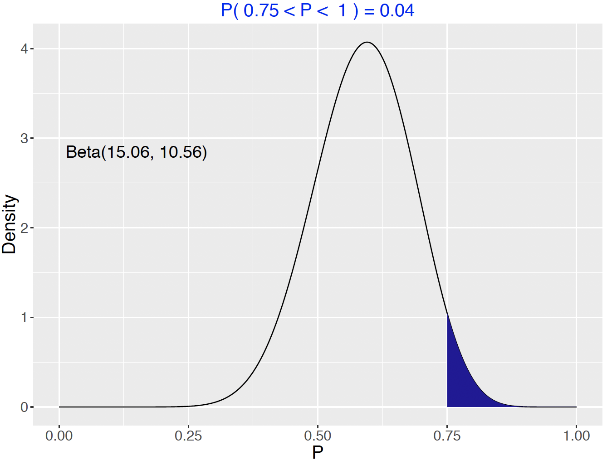
This computation can be implemented using simulation. Since the posterior distribution is \(\textrm{Beta}(15.06, 10.56)\), one generates a large number of random values from this Beta distribution, then summarizes the sample of simulated draws to obtain the probability of \(p \geq 0.75\). First a sample of \(S = 1000\) from the Beta posterior is taken, storing the results in the vector BetaSamples.
S <- 1000
BetaSamples <- rbeta(S, 15.06, 10.56)The proportion of the 1000 simulated values of \(p\) that are at least 0.75 gives an approximation of the probability that \(p \geq 0.75\).
sum(BetaSamples >= 0.75) / S[1] 0.036The simulation-based probability estimate is 0.037 which is an accurate approximation to the exact probability 0.04 obtained before.
It would be reasonable to question the choice of the number of simulations \(S = 1000\). One can change the simulation sample size to larger or smaller values as one sees fit. In general, the larger the value of \(S\), the more accurate the approximation. Figure 7.11 shows that the shape of a histogram of the simulated values of \(p\) approaches the exact posterior density as the value of \(S\) changes from 100 to 10,000. The corresponding simulation-based probabilities of \(p \geq 0.75\) are \(\{0.02, 0.05, 0.033, 0.0422\}\) indicating that the accuracy of the approximation improves for larger simulation sample sizes.
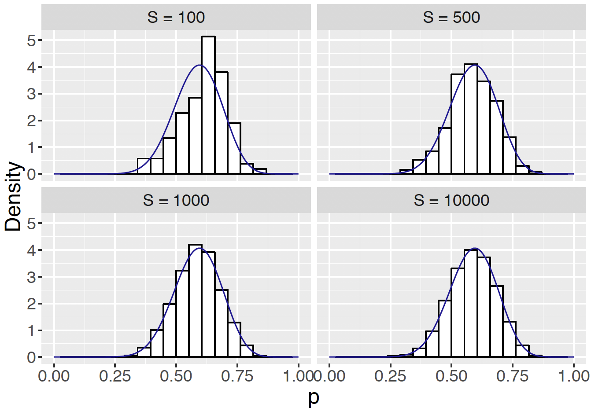
One will observe variation from one simulation from another (see the two different but similar approximated probabilities 0.037 and 0.033 when \(S = 1000\)). To replicate one’s results one specifies the seed of the random number simulator set.seed(). Choose any number that you like to put in – if this set.seed() line of code is executed first, then the same sequence of random values will be generated and one replicates the simulation-based computation.
1.5.2 Bayesian credible intervals
Another type of inference is a Bayesian credible interval, an interval that one is confident contains \(p\). Such an interval provides an uncertainty estimate for the parameter \(p\). A 90% Bayesian credible interval is an interval that contains 90% of the posterior probability.
One convenient 90% credible interval is the “equal tails” interval that contains the middle 90% of the probability content. The function beta_interval() in ProbBayes R package illustrates and computes the equal-tails interval. The shaded area in Figure 7.12 corresponds to \(90\%\) of the posterior probability. The probability \(p\) falls between 0.427 and 0.741 is exactly 90 percent.
beta_interval(0.9, c(15.06, 10.56))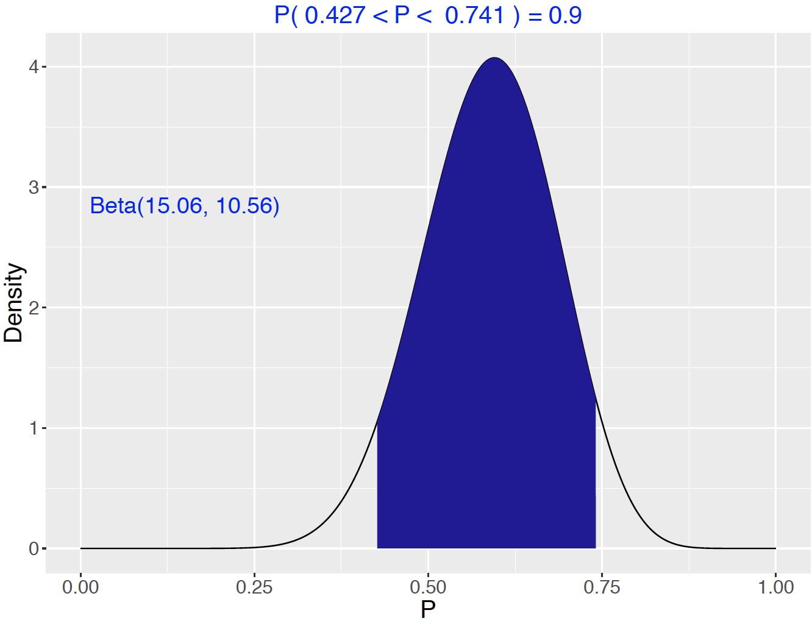
One obtains this middle 90% credible interval using the qbeta() function.
qbeta(c(0.05, 0.95), 15.06, 10.56)[1] 0.4266788 0.7410141This Bayesian credible interval differs from the interpretation of a traditional confidence interval. With a traditional confidence interval, one does not have confidence that one particular interval will contain \(p\). Instead 90% confidence refers to the average coverage of the interval in repeated sampling.
Other types of Bayesian credible intervals can be computed. For example, instead of a credible interval covering the middle 90% of the posterior probability, one could create a credible interval covers the lower 90%, or the upper 90%, or the middle 95%. The qbeta() function is helpful in achieving all of these different type of intervals, as long as we know the exact posterior distribution, that is, the two shape parameters of the posterior Beta distribution. For example, the following code computes a credible interval that covers the lower 90% of the posterior distribution.
qbeta(c(0.00, 0.90), 15.06, 10.56)[1] 0.0000000 0.7099912An alternative way of creating credible intervals is by simulation. One first takes a random sample from the \(\textrm{Beta}(15.06, 10.56)\) distribution, then summarizes the simulated values by finding the two cutoff points of the middle 90% of the sample. The quantile() function is useful for this purpose. As a demonstration, below we simulate \(S = 1000\) proportion values and compute the credible interval.
S <- 1000
BetaSamples <- rbeta(S, 15.06, 10.56)
quantile(BetaSamples, c(0.05, 0.95)) 5% 95%
0.4225222 0.7419642 The approximate middle 90% credible interval is [0.427, 0.733], which is close in value to the exact 90% credible interval [0.427, 0.741] computed using the qbeta() and beta_interval() functions. In an end-of-chapter exercise the reader is encouraged to practice and experiment with different values of the size of the simulated sample \(S\).
1.5.3 Bayesian prediction
Prediction is a typical task of Bayesian inference and statistical inference in general. Once we are able to make inference about the parameter in our statistical model, one may be interested in predicting future observations.
Denote a new observation by the random variable \(\tilde{Y}\). In particular, if the new survey is given to \(m\) students, the random variable \(\tilde{Y}\) is the number of students preferring Friday to dine out out of the \(m\) respondents. If again the survey is given to a random sample, the random variable \(\tilde{Y}\), conditional on \(p\), follows a Binomial distribution with the fixed total number of trails \(m\) and success probability \(p\). One’s knowledge about the location of \(p\) is expressed by the posterior distribution of \(p\).
Mathematically, to make a prediction of a new observation, one is asking for the distribution of \(\tilde{Y}\) given the observed data \(Y = y\). That is, one is interested in the probability function \(f(\tilde{Y} = \tilde{y} \mid Y = y)\) where \(\tilde y\) is a value of \(\tilde{Y}\). But the conditional distribution of \(\tilde{Y}\) given a value of the proportion \(p\) is Binomial(\(m, p\)) and the current beliefs about \(p\) are described by the posterior density. So one writes the joint density of \(\tilde{Y}\) and \(p\) as the product \[\begin{eqnarray} f(\tilde{Y}= \tilde{y}, p \mid Y = y) = f(\tilde{Y} = \tilde{y} \mid p) \pi(p \mid Y = y). \end{eqnarray}\] By integrating out \(p\), one obtains the predictive distribution \[\begin{eqnarray} f(\tilde{Y} = \tilde{y} \mid Y = y) = \int f(\tilde{Y} =\tilde{y} \mid p) \pi(p \mid Y = y) dp. \label{eq:Binomial:pred} \end{eqnarray}\]
The density of \(\tilde{Y}\) given \(p\) is Binomial with \(m\) trials and success probability \(p\), and the posterior density of \(p\) is \({\rm Beta}(a + y, b + n - y)\). After the substitution of densities and an integration step (see Appendix B for the detail), one finds that the predictive density is given by \[\begin{eqnarray} f(\tilde{Y} =\tilde{y} \mid Y = y) &=& {m \choose \tilde{y}} \frac{B(a + y + \tilde{y}, b + n - y + m - \tilde{y})}{B(a + y, b + n - y)}. \nonumber \\ \end{eqnarray}\] This is the Beta-Binomial distribution with parameters \(m\), \(a + y\) and \(b + n - y\). \[\begin{eqnarray} \tilde{Y} \mid Y = y \sim \textrm{Beta-Binomial}(m, a + y, b + n - y). \end{eqnarray}\] To summarize, Bayesian prediction of a new observation is a Beta-Binomial distribution where \(m\) is the number of trials in the new sample, \(a\) and \(b\) are shape parameters from the Beta prior, and \(y\) and \(n\) are quantities from the data/likelihood.
Using this Beta-Binomial distribution in our example, one computes the predictive probability that \(\tilde y\) students prefer Friday in a new survey of 20 students. We illustrate the use of the pbetap() function from the ProbBayes package. The inputs to pbetap() are the vector of Beta shape parameters \((a, b)\), the sample size 20, and the values of \(\tilde{y}\) of interest.
a <- 15.06
b <- 10.56
prob <- pbetap(c(a, b), 20, 0:20)
pred_distribution <- data.frame(Y = 0:20,
Probability = prob)prob_plot(pred_distribution,
Color = crcblue, Size = 4) +
theme(text=element_text(size=18))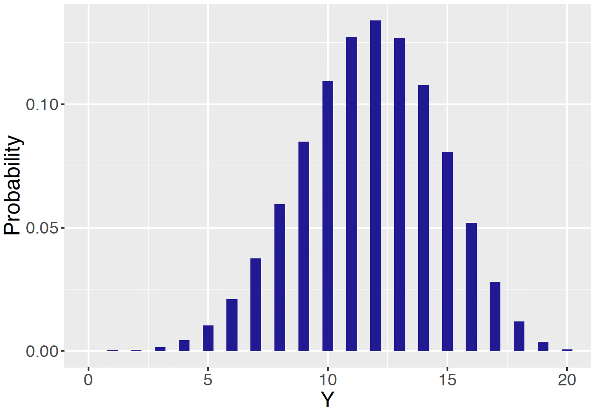
These predictive probabilities are displayed in Table 7.2 \(\ref{tab:predictive_dining}\) and graphed in Figure 7.13.
Table 7.2. Predictive distribution of the number of students preferring Friday in a future sample of 20.
| Y | Probability | Y | Probability |
|---|---|---|---|
| 0 | 0 | 11 | 0.127 |
| 1 | 0 | 12 | 0.134 |
| 2 | 0 | 13 | 0.127 |
| 3 | 0.001 | 14 | 0.108 |
| 4 | 0.004 | 15 | 0.080 |
| 5 | 0.010 | 16 | 0.052 |
| 6 | 0.021 | 17 | 0.028 |
| 7 | 0.037 | 18 | 0.012 |
| 8 | 0.059 | 19 | 0.004 |
| 9 | 0.085 | 20 | 0.001 |
| 10 | 0.109 |
Looking at the table, the most likely number of students preferring Friday is 12. Just as in the inference situation, it is desirable to construct an interval that will contain \(\tilde Y\) with a high probability. Suppose the desired probability content is 0.90. One constructs this prediction interval by putting in the most likely values of \(\tilde Y\) until the probability content of the set exceeds 0.90.
This method is implemented using the following command:
discint(pred_distribution, .9)$prob
[1] 0.9185699
$set
[1] 7 8 9 10 11 12 13 14 15 16One therefore finds that \[ Prob(7 \le \tilde Y \le 16) = 0.919. \]
This exact predictive distribution is based on the posterior distribution of \(p\), as one uses \(\pi(p \mid Y=y)\) in the integration process in Equation (7.14). For that reason this predictive distribution is called the posterior predictive distribution. There also exists a prior predictive distribution, a topic we will briefly introduce in Section 7.6.
In situations where it is difficult to derive the exact predictive distribution, one simulates values from this distribution. One implements this predictive simulation by first simulating draws of the parameter (in this case the proportion \(p\)) from its posterior distribution, and then simulating values of the future observation (e.g. the new observation \(\tilde{Y}\)) from the sampling density (here the Binomial distribution).
We illustrate this simulation procedure with the generic Beta posterior \(\textrm{Beta}(a + y, b + n - y)\). To simulate a single draw from the predictive distribution, one first simulates a single proportion value \(p\) from the Beta posterior and then simulates a new data point \(\tilde{y}\) (the number of successes out of \(m\) trials) from a Binomial distribution with sample size \(m\) and probability of success given by the simulated draw of \(p\). \[\begin{eqnarray*} \text{sample}\,\, p \sim {\rm{Beta}}(a + y, b + n - y) &\rightarrow& \text{sample}\,\, \tilde{Y} \sim {\rm{Binomial}}(m, p) \end{eqnarray*}\]
This process of simulating a single draw is implemented by the rbeta() and rbinom() functions. Let \(m = n\) (the size of the future sample is the same as the size of the observed sample).
a <- 3.06; b <- 2.56
n <- 20; y <- 12
pred_p_sim <- rbeta(1, a + y, b + n - y)
(pred_y_sim <- rbinom(1, n, pred_p_sim))[1] 14Due to the ability of R to work easily with vectors, ]the same code is essentially used for simulating \(S = 1000\) draws from the predictive distribution.
In the following R script, pred_p_sim contains 1000 simulated draws from the posterior, and for each element of this posterior sample, the rbinom() function is used to simulate a corresponding value of \(\tilde Y\) from the Binomial sampling density.
a <- 3.06; b <- 2.56
n <- 20; y <- 12
S <- 1000
pred_p_sim <- rbeta(S, a + y, b + n - y)
pred_y_sim <- rbinom(S, n, pred_p_sim)Figure 7.14 displays predictive probabilities for the number of students who prefer Fridays using the exact Beta-Binomial and simulation methods. One observes good agreement using these two computation methods.
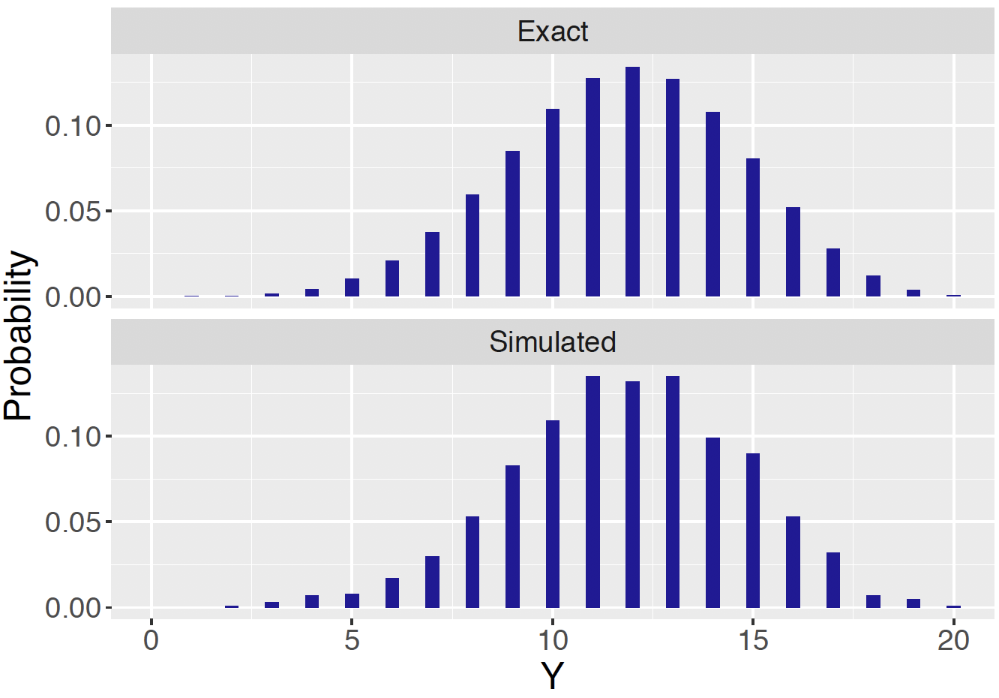
For example, using the simulated values of \(\tilde Y\) one finds that \[ Prob(6 \le \tilde Y \le 15) = 0.927 \] which is close in value to the range \(Prob(7 \le \tilde Y \le 16) = 0.919\) found using the exact predictive distribution.
a <- 15.06
b <- 10.56
prob <- pbetap(c(a, b), 20, 0:20)
pred_distribution <- data.frame(Y = 0:20,
Probability = prob)
discint(pred_distribution, .9)$prob
[1] 0.9185699
$set
[1] 7 8 9 10 11 12 13 14 15 161.6 Predictive Checking
In the previous section, the use of the predictive distribution has been illustrated in learning about future data. This is more precisely described as the posterior predictive density as one is obtaining this density by integrating the sampling density \(f(\tilde Y = \tilde y \mid p)\) over the posterior density \(\pi(p \mid y)\).
The prior predictive density is also useful in model checking. In a Bayesian model where \(p\) has a prior \(\pi(p)\) and \(Y\) has a sampling density \(f(Y = y \mid p)\), one writes the joint density of \((p, Y)\) as the product of the sampling density and the prior: \[\begin{eqnarray} f(p, Y = y) = f(Y = y \mid p) \pi(p). \end{eqnarray}\] Suppose one conditions on \(y\) instead of \(p\) and then one obtains an alternative representation of the joint density: \[\begin{eqnarray} f(p, Y = y) = \pi(p \mid Y = y) f(Y = y). \end{eqnarray}\] The first term in this product, the density \(\pi(p \mid Y = y)\), is the posterior density of \(p\) given the observation \(y\); this density is useful for performing inference about the proportion. The second term in this product is the density \(f(Y = y)\) is the prior predictive density – this represents the density of future data before the observation \(y\) is taken. If the actual observation denoted by \(y_{obs}\) is not consistent with the prior predictive density \(f(Y = y)\), this indicates some problem with the Bayesian model. Basically, this says that the observed data is unlikely to happen if one simulates predictions of data from our model.
To illustrate the use of prior predictive checking, recall that the restaurant owner assigned a Beta(3.06, 2.56) prior to the proportion \(p\) of students dining on Friday. A sample of 20 students will be taken. Based on this information, one computes the predictive probability \(f(Y = y)\) of \(y\) students preferring Friday dining of the sample of 20. This predictive distribution for all possible values of \(y\) is displayed in Figure 7.15. Recall that we actually observed \(y_{obs} = 12\) Friday diners — this value is shown in Figure 7.15 as a large black dot. This value is in the middle of the distribution – the takeaway is that the observed data is consistent with predictions from the owner’s Bayesian model.
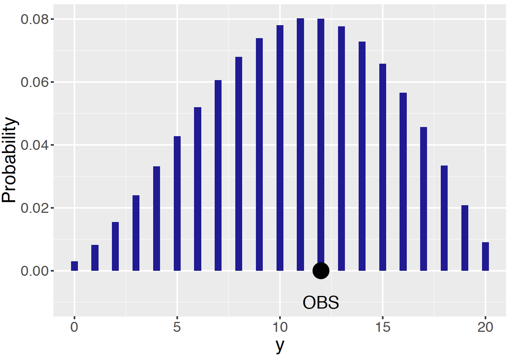
In contrast, suppose another restaurant worker is more pessimistic about the likelihood of students dining on Friday. This worker’s prior median of the proportion \(p\) is 0.2 and her 90th percentile is 0.4 — this information is matched with a Beta prior with shape parameters 2.07 and 7.32. Figure 7.16 displays the predictive density of the number of Friday diners of a sample of 20 using this worker’s prior. Here one reaches a different conclusion. The observed number 12 of Friday diners is in the tail of this predictive distribution — this observation is not consistent with predictions from the Bayesian model. In closer examination, one sees conflict between the information in the worker’s prior and the data — her prior said that the proportion \(p\) was close to 0.20 and the data result (12 out of 20 successes) indicates that the proportion is close to 0.60. Predictive checking is helpful in this case in detecting this prior/data conflict.
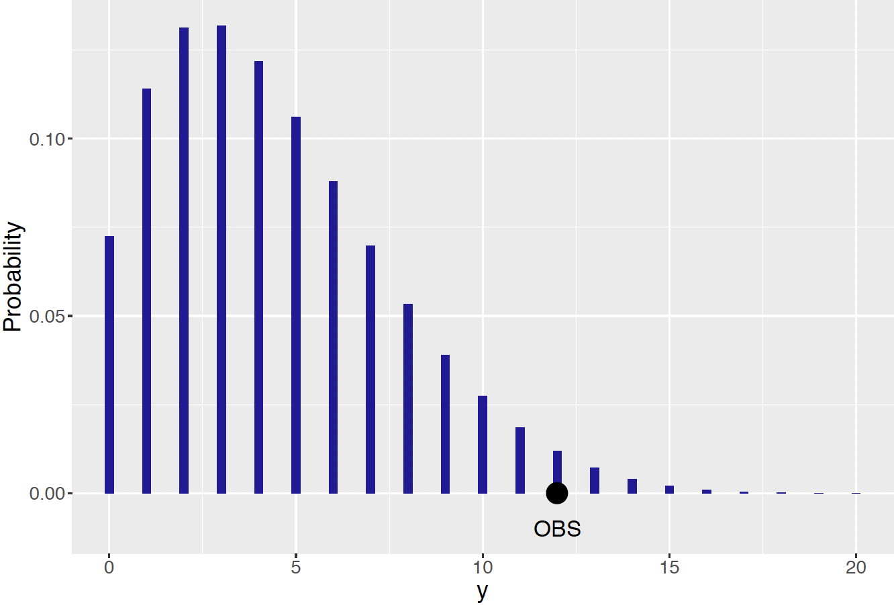
1.6.1 Comparing Bayesian models
The prior predictive distribution is also useful in comparing two Bayesian models. To illustrate model comparison, suppose a second worker at the restaurant is also asked about the fraction of students who dine on Friday. He knows that the owner’s belief about the proportion \(p\) is described by a Beta(3.06, 2.56) density, and the fellow worker’s belief about \(p\) is represented by a Beta(2.07, 7.32) density. Who should the second worker believe?
Suppose this second worker believes that both the owner’s and fellow worker’s beliefs about the proportion \(p\) are equally plausible. So he places a probability of 0.5 on the Beta(3.06, 2.56) prior and a probability of 0.5 on the Beta(2.07, 7.32) prior. This second worker’s prior \(\pi(p)\) is written as the mixture \[\begin{eqnarray} \pi(p) = q \pi_1(p) + (1 - q) \pi_2(p), \end{eqnarray}\] where \(q = 0.5\) and \(\pi_1\) and \(\pi_2\) denote the owner’s and worker’s Beta priors.
Now one observes the survey data – \(y\) Fridays in a sample of size \(n\). Using the usual prior times likelihood procedure, the posterior density of \(p\) is proportional to the product \[\begin{eqnarray} \pi(p \mid Y = y) \propto \Big[q \pi_1(p) + (1 - q) \pi_2(p)\Big] \times {n \choose y} p ^ {y }(1 - p) ^ {n - y}. \end{eqnarray}\] After some manipulation, one can show that the posterior density for the proportion \(p\) has the mixture form \[\begin{eqnarray} \pi(p \mid Y = y) = q(y) \pi_1(p \mid Y = y) + (1 - q(y)) \pi_2(p \mid Y = y). \end{eqnarray}\]
The posterior densities \(\pi_1(p \mid y)\) and \(\pi_2(p \mid y)\) are the familiar Beta forms. For example, \(\pi_1(p \mid Y = y)\) will be the Beta(3.06 + \(y\), 2.56 + \(n - y\)) posterior density combining the Beta(3.06, 2.56) prior and the sample data of \(y\) successes in a sample of size \(n\). Likewise, \(\pi_2(p \mid Y = y)\) will be the Beta density combining the worker’s Beta(2.07, 7.32) prior and the data.
The quantity \(q(y)\) represents the posterior probability of the owner’s prior. One expresses this probability as \[\begin{eqnarray} q(y) = \frac{q f_1(Y = y)}{q f_1(Y = y) + (1 - q) f_2(Y =y)} \end{eqnarray}\] where \(f_1(Y = y)\) and \(f_2(Y = y)\) denote the predictive densities corresponding to the owner’s and worker’s priors. With a little algebra, one represents the posterior odds of the model probabilities as follows.
\[\begin{eqnarray} \frac{P(Prior \, 1 \mid Y = y)}{P(Prior \, 2 \mid Y = y)} = \frac{q(y)}{1 - q(y)} = \left[\frac{q}{1 - q}\right] \left[\frac{f_1(Y = y)}{f_2(Y = y)}\right] \end{eqnarray}\]
The posterior odds of the owner’s prior \(P(Prior \, 1 \mid Y = y) / P(Prior \, 2 \mid y = y)\) is written as the product of two terms.
The ratio \(q / (1 - q)\) represents the prior odds of the owner’s prior.
The term \(f_1(Y = y) / f_2(Y = y)\), the ratio of the predictive densities, is called the Bayes factor. It reflects the relative abilities of the two priors to predict the observation \(y\).
The function binomial.beta.mix() is used to find the Bayes factor for our example. One inputs the prior probabilities of the two models (priors), and the vectors of Beta shape parameters that define the owner’s prior and the worker’s prior. The displayed output is the posterior odds value of 6.77.
probs <- c(0.5, 0.5)
beta_par1 <- c(3.06, 2.56)
beta_par2 <- c(2.07, 7.32)
beta_par <- rbind(beta_par1, beta_par2)
output <- binomial.beta.mix(probs, beta_par, c(12, 8))
(posterior_odds <- output$probs[1] / output$probs[2])beta_par1
6.777823 Since the two priors are given equal probabilities, the prior odds \(q / (1 - q)\) is equal to one. In this case the posterior odds is equal to the Bayes factor. The interpretation is that for the given observation (12 successes in 20 trials), there is 6.77 times more support for the owner’s prior than for the worker’s prior. This conclusion is consistent with the earlier work that showed that the observed value of \(y\) was inconsistent with the Bayesian model for the worker’s prior.
1.6.2 Posterior predictive checking
Although the prior predictive distribution is useful in model checking, it has some disadvantages. One problem is that the distribution \(f(Y = y)\) may not exist in the situation where the prior \(\pi()\) is not a proper probability distribution. We will see particular situations in future chapters where a vague or imprecise probability distribution is assigned as our prior and then the prior predictive distribution will not be well-defined. A related issue is that a prior may be assigned that may not accurately reflect one’s prior beliefs about a parameter. Small errors in the specification of the prior will result in errors in the prior predictive distribution. So there needs to be some caution in the use of the prior predictive distribution in assessing the goodness of the Bayesian model.
An alternative method of checking the suitability of a Bayesian model is based on the posterior predictive distribution. In this setting, one computes the posterior predictive distribution of a replicated dataset, that is a dataset of the same sample size as our observed sample. One sees if the observed value of \(y\) is in the middle of this predictive distribution. If this is true, then this means that the observed sample is consistent with predictions of replicated data. On the other hand, if the observed \(y\) is in the tails of the posterior distribution, this indicates some model misspecification which means that there is possibility some issue with the specified prior or sampling density.
One attractive aspect of the posterior prediction distribution is that replicated datasets is conveniently simulated. To simulate one replicated dataset, we first simulate a parameter from its posterior distribution, then simulate new data from the data model given the simulated parameter value. In the Beta-Binomial situation, the posterior of the proportion \(p\) is \({{\rm{Beta}}}(a + y, b + n - y)\).
To simulate a new data point \(\tilde{Y} = \tilde{y}\), one first simulates a proportion value \(p^{(1)}\) from the Beta posterior and then simulate a new data point \(\tilde{y}^{(1)}\) from a Binomial distribution with sample size \(n\) and probability of success \(p^{(1)}\). If we wish to obtain a sample of size \(S\) from the posterior predictive distribution, this process is repeated \(S\) times as showed in the following diagram. \[\begin{eqnarray*}
\text{sample}\,\, p^{(1)} \sim {\rm{Beta}}(a + y, b + n - y) &\rightarrow& \text{sample}\,\, \tilde{y}^{(1)} \sim {\rm{Binomial}}(n, p^{(1)})\\
\text{sample}\,\, p^{(2)} \sim {\rm{Beta}}(a + y, b + n - y) &\rightarrow& \text{sample}\,\, \tilde{y}^{(2)} \sim {\rm{Binomial}}(n, p^{(2)})\\
&\vdots& \\
\text{sample}\,\, p^{(S)} \sim {\rm{Beta}}(a + y, b + n - y) &\rightarrow& \text{sample}\,\, \tilde{y}^{(S)} \sim {\rm{Binomial}}(n, p^{(S)})
\end{eqnarray*}\] The sample \(\tilde{y}^{(1)}, ..., \tilde{y}^{(S)}\) is an approximation to the posterior predictive distribution that is used for model checking. In practice, one constructs a histogram of this sample and decides if the observed value of \(y\) is in the central portion of this predictive distribution. The reader will be given an opportunity to use this algorithm to see if the observed data is consistent with simulations of replicated data from this predictive distribution.